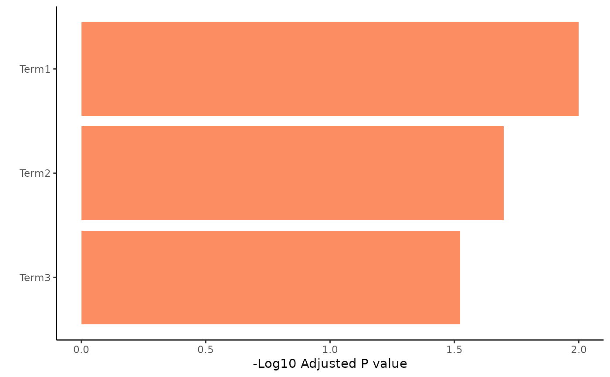

plot enrichr results in a bar plot
Examples
enrichr_data_go <- data.frame(
Term = c("Term1", "Term2", "Term3"),
Adjusted.P.value = c(0.01, 0.02, 0.03),
Overlap = c("5/100", "10/200", "15/300")
)
enrichr_data <- list("GO_Biological_Process_2021" = enrichr_data_go)
writexl::write_xlsx(enrichr_data, "./enrichr_test.xlsx")
plotEnrichr(
filename = "test",
sheet = "GO_Biological_Process_2021",
width = 10,
height = 5,
dir_output = "."
)

unlink("enrichr_test.xlsx")
unlink("barplot_enrichr_test_GO_Biological_Process_2021.pdf")